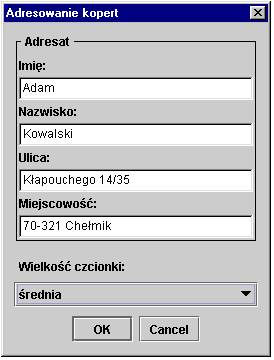
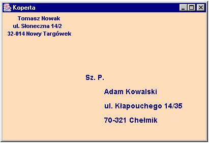
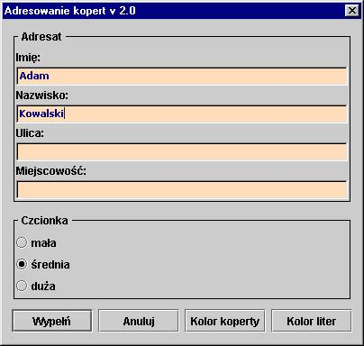
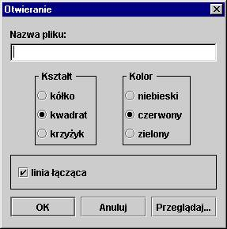
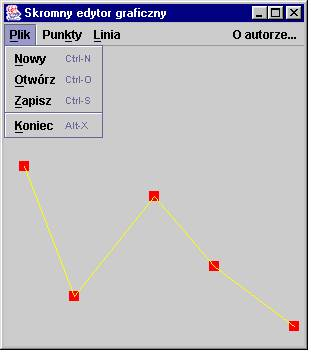
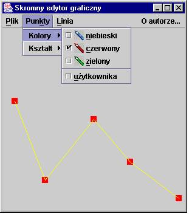
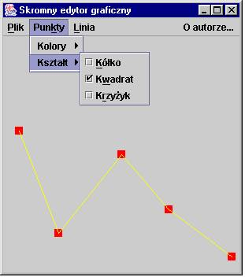
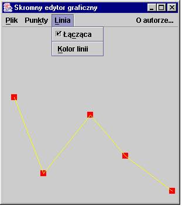

W menu polecano wariacje na temat JOptionPane,
zamówiono dwa dania, pss...
dwa za-dania, w dwóch wariantach ka¿de

- Zadanie 1 (JOptionPane!)
Wykonaj program adresuj±cy cyfrow± kopertê. Adres nadawcy zapisany jest w pliku (w dowolnie okre¶lonym przez osobê pisz±c± program formacie). Dane dotycz±ce adresata, wczytywane s± przy pomocy przedstawionej poni¿ej formatki.

U¿ytkownik programu mo¿e zdecydowaæ o rozmiarze liter adresu adresata na kopercie. Przyjmujemy, ¿e ma do wyboru minimum cztery rozmiary symboliczne: ma³a czcionka, ¶rednia, du¿a i bardzo du¿a.
Poni¿ej przedstawiono przyk³ad wykonania programu.

- Zadanie 2 (JOptionPane!)
Zmodyfikuj zadanie pierwsze tak, aby u¿ytkownik mia³ do wyboru nie tylko rozmiar czcionki, ale aby mia³ dodatkow± mo¿liwo¶æ zmiany koloru koperty i koloru tekstu na kopercie. Zmiany obu kolorów maj± powodowaæ
zmianê koloru liter i koloru t³a na formatce, tak aby u¿ytkownik mia³ przedsmak wygl±du adresowanej koperty.
Poni¿ej przedstawiono przyk³ad wygl±du formatki, gdy u¿ytkownik dokona³ ju¿ pewnego wyboru obu kolorów.

- Zadanie 3 (JOptionPane!)
Napisz bardzo prosty, statyczny edytor graficzny, który
póki co bêdzie pe³ni³ raczej rolê viewer'a (?). W pliku
zapisane s± punkty w formacie: (x1,y1) (x2,y2) ...(xn,yn).
Program powinien wczytaæ nazwê pliku zawieraj±cego informacjê o punktach oraz informacje o sposobie prezentacji zawartych w pliku danych (kolor i kszta³t punktu, ewentualne ³±czenie nastêpuj±cych po sobie w pliku punktów), a nastêpnie zgodnie z preferencjami u¿ytkownika
wy¶wietliæ zawarto¶æ pliku w oknie.
Poni¿ej przedstawiono propozycjê formatki.

- Zadanie 4
Zmodyfikuj program realizuj±cy zadanie trzecie, dodaj±c przedstawione poni¿ej menu.



